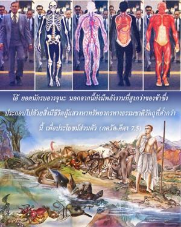
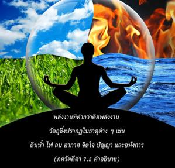
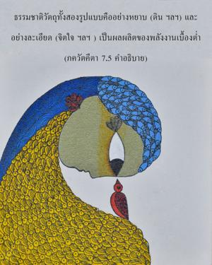

โอ้ ยอดนักรบ อรฺชุน นอกจากนี้ยังมีพลังงานที่สูงกว่าของข้า ซึ่งประกอบไปด้วยสิ่งมีชีวิตผู้แสวงหาทรัพยากรทางธรรมชาติวัตถุที่ต่ำกว่านี้เพื่อประโยชน์ส่วนตัว



ได้กล่าวไว้อย่างชัดเจน ณ ที่นี้ว่าสิ่งมีชีวิตเป็นธรรมชาติหรือพลังงานที่สูงกว่าขององค์ภควานฺ พลังงานที่ต่ำกว่า คือ พลังงานวัตถุซึ่งปรากฏในธาตุต่างๆ เช่น ดิน น้ำ ไฟ ลม อากาศ จิตใจ ปัญญา และอหังการ ธรรมชาติวัตถุทั้งสองรูปแบบ คือ อย่างหยาบ (ดิน) และอย่างละเอียด (จิตใจ) เป็นผลผลิตของพลังงานเบื้องต่ำ สิ่งมีชีวิตผู้แสวงหาประโยชน์ส่วนตัวจากพลังงานเบื้องต่ำ ด้วยจุดมุ่งหมายที่แตกต่างกันเป็นพลังงานที่สูงกว่าขององค์ภควานฺ และด้วยพลังงานนี้ทำให้โลกวัตถุทั้งหมดดำเนินไป ปรากฏการณ์แห่งจักรวาลไม่มีอำนาจในการปฏิบัติการ แต่จะเคลื่อนไปด้วยพลังงานที่สูงกว่า คือ สิ่งมีชีวิต พลังงานจะถูกควบคุมโดยแหล่งกำเนิดของมันเสมอ ฉะนั้น สิ่งมีชีวิตจึงถูกควบคุมเสมอโดยไม่มีความเป็นอยู่อิสระ และจะไม่มีวันมีอำนาจทัดเทียมกับองค์ภควานฺเหมือน ดังที่มนุษย์ผู้ด้อยปัญญาคิด ข้อแตกต่างระหว่างสิ่งมีชีวิต และองค์ภควานฺได้อธิบายไว้ใน ศฺรีมทฺ-ภาควตมฺ (10.87.30) ดังนี้
อปริมิตา ธฺรุวาสฺ ตนุ-ภฺฤโต ยทิ สรฺว-คตาสฺ
ตรฺหิ น ศาสฺยเตติ นิยโม ธฺรุว เนตรถา
อชนิ จ ยนฺ-มยํ ตทฺ อวิมุจฺย นิยนฺตฺฤ ภเวตฺ
สมมฺ อนุชานตำ ยทฺ อมตํ มต-ทุษฺฏตยา
“โอ้ ผู้เป็นอมตะสูงสุด หากสิ่งมีชีวิตผู้อยู่ในร่างเป็นอมตะ และแผ่กระจายไปทั่วเหมือนกับพระองค์ พวกเขาก็จะไม่มาอยู่ภายใต้การควบคุมของพระองค์ แต่ถ้าหากยอมรับว่าสิ่งมีชีวิตเป็นพลังงานน้อยๆ ของพระองค์พวกเขา จะมาอยู่ภายใต้การควบคุมของพระองค์ทันที ฉะนั้น การหลุดพ้นที่แท้จริงจึงประกอบด้วยการที่สิ่งมีชีวิตศิโรราบ และมาอยู่ภายใต้การควบคุมขององค์ภควานฺ การศิโรราบเช่นนี้จะทำให้พวกเขามีความสุข เมื่อมาอยู่ในตำแหน่งเดิมแท้เช่นนี้เท่านั้นที่จะทำพวกเขาสามารถเป็นผู้ควบคุม ดังนั้น มนุษย์ผู้มีความรู้จำกัดสนับสนุนทฤษฎีเป็นหนึ่งเดียวกันที่ว่าองค์ภควานฺ และสิ่งมีชีวิตเท่าเทียมกันในทุกๆ ด้าน อันที่จริงพวกนี้ถูกแนวคิดอันเป็นมลทินนำพาไปในทางที่ผิด”
องค์ภควานฺ ศฺรีกฺฤษฺณ ทรงเป็นผู้ควบคุมเพียงพระองค์เดียว และสิ่งมีชีวิตทั้งหมดถูกพระองค์ควบคุม สิ่งมีชีวิตเหล่านี้เป็นพลังงานเบื้องสูงของพระองค์ เพราะคุณภาพแห่งความเป็นอยู่ของพวกเขาเป็นหนึ่งเดียว และเหมือนกับพระองค์ แต่จะไม่มีวันเทียบเท่ากับพระองค์ในปริมาณแห่งพลังอำนาจ ขณะที่แสวงหาประโยชน์ส่วนตัวอยู่กับพลังงานเบื้องต่ำ (วัตถุ) ทั้งหยาบ และละเอียดพลังงานเบื้องสูง (สิ่งมีชีวิต) ได้ลืมจิตใจ และปัญญาทิพย์อันแท้จริงของตนเอง การลืมเช่นนี้เนื่องมาจากอิทธิพลของวัตถุที่มีต่อสิ่งมีชีวิต แต่เมื่อสิ่งมีชีวิตหลุดพ้นจากอิทธิพลของพลังงานแห่งความหลงทางวัตถุ เขาจะบรรลุถึงระดับ มุกฺติ หรือความหลุดพ้น อหังการภายใต้อิทธิพลของความหลงทางวัตถุคิดว่า “ข้าคือวัตถุ และวัตถุที่ได้มาเป็นของข้า” ตำแหน่งอันแท้จริงสำนึกได้เมื่อเป็นอิสระจากความคิดทางวัตถุทั้งปวง รวมทั้งแนวความคิดที่ว่าจะกลายมาเป็นหนึ่งเดียวกับองค์ภควานฺในทุกๆ ด้าน ฉะนั้น เราอาจสรุปได้ว่า คีตา ได้ยืนยันว่าสิ่งมีชีวิตเป็นเพียงหนึ่งในพลังงานอันหลากหลายขององค์กฺฤษฺณ และเมื่อพลังงานนี้เป็นอิสระเสรีจากมลทินทางวัตถุ เขาจะมีกฺฤษฺณจิตสำนึกอย่างสมบูรณ์ หรือหลุดพ้นแล้ว